In this lesson, you'll see how to display Open File dialogue boxes in Java. This is done with the File Choser control.
Go back to Design view. In the NetBeans palette, locate the File Chooser item, which is under Swing Windows:
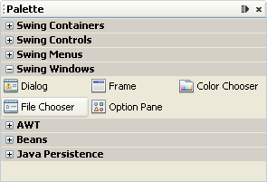
Drag a File Chooser near your form, but not onto it. Drop it just below the form, in a white area. It won't actually appear on the form, but you can see it in the Inspector window:
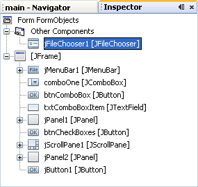
The default name for the File Chooser is jFileChooser1. Right click on jFileChooser1 in the Inspector window. From the menu that appears, select Change Variable Name. When the dialogue box appears, type db as the name:
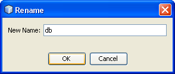
Click OK to confirm the change. The Inspector window should look like this:
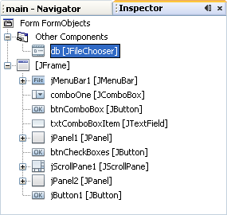
You now have a File Chooser added to the project.
Displaying the File Chooser dialogue box is quite simple. Go back to the code stub for your Open menu item, the one where you had the message box. Now type the following line:
int returnVal = db.showOpenDialog( this );
Our File Chooser is called db. We're using the ShowOpenDialog method of the File Chooser class. In between the round brackets of ShowOpenDialog you type then name of the window that's going to be holding the dialogue box. We've typed this, meaning "this form".
The ShowOpenDialog method returns a value. This value is an integer. The value tells you which button was clicked on the dialogue box: open, cancel, etc. We're storing the value in a variable called returnVal. We'll use this value in a moment.
But run your programme again. Click File > Open on your form. You should see a dialogue box appear:
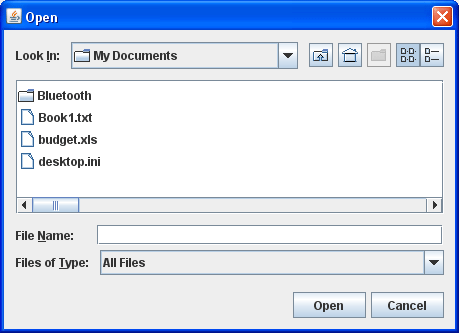
Unfortunately, the only thing an Open Dialogue box does is to select a file - it doesn't actually open anything. If you want to open a file, you have to write the code yourself. We'll do that soon. But for now, we can get the name and path of the file that a user selects.
First, add the following IF Statement to your code, just below your other two lines (the returnVal one and your commented-out message box):
if (returnVal = = javax.swing.JFileChooser.APPROVE_OPTION) {
}
So we're using a Swing class called JFileChooser. With this class, you can examine which button was clicked. When you type the dot after JFileChooser you should see a popup list:
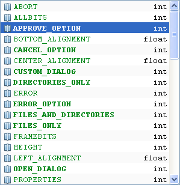
The APPROVE_OPTION means things like the OK and Yes buttons. So we're testing the returnVal variable to see if it matches the APPROVE_OPTION (did the user click OK?).
To get at the file chosen by the user there is a method called getSelectedFile. However, this returns a File object, rather than a string. The File object is part of the IO class in Java. So add the following line to your IF Statement:
java.io.File file = db.getSelectedFile( );
So the file chosen by the user will end up in the File object that we've called file.
To do something useful with it (open the file, for example), we need to convert it to a string:
String file_name = file.toString( );
This line just uses the toString method of File objects. We're placing the result in a new variable called file_name. Add the line to your IF Statement.
To display the file name, remove the comments from your message box and move it as the last line of your IF Statement. Change the last parameter between the round brackets to file_name:
javax.swing.JOptionPane.showMessageDialog(FormObjects.this, file_name);
Because this line is so long, you can add an import statement to the top of your code, underneath the one you already have:
import javax.swing.JOptionPane;
The message box line can then just be:
JOptionPane.showMessageDialog( FormObjects.this, file_name);
It's a little bit easier to read, now!
But your code should now look like this:
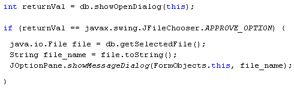
Run your programme and test it out. Click File > Open to see the dialogue box. Select any file on your computer and click Open. Your message box should display:
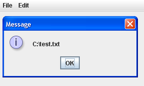
Before we add the code to open up the selected file, you may have noticed that Files of Type on your Open file dialogue box is set to "All files". You can filter the files on this list, so that the user can open only, say, text files, or just images with certain extensions (jpeg, gif, png).
To filter the "Files of Type" list, the dialogue box has an addChoosableFileFilter method. But you need a Filter object between the round brackets.
So that your code doesn't get unnecessarily long, add the following two import statements to the top of your code, just below the other ones:
import javax.swing.filechooser.FileFilter;
import javax.swing.filechooser.FileNameExtensionFilter;
To set up a file name extension filter, you need to create a new FileFilter object. Add the following line just before the first line of your code (before the int returnVal line):
FileFilter ft = new FileNameExtensionFilter("Text Files", "txt");
In between the round brackets of FileNameExtensionFilter you first need the text that will appear on the Files of Type list. After a comma you type the name of files that you want to display. A proper file extension is needed, here, but without the dot. Note the double quotes above.
You can add more than one extension. Just type a comma and then the files you want to display:
FileNameExtensionFilter("Text Files", "txt", "html");
Once you have a filter object set up, you can use the addChoosableFileFilter method of your dialogue box:
db.addChoosableFileFilter( ft );
Add the line to your code, just below the FileFilter line:
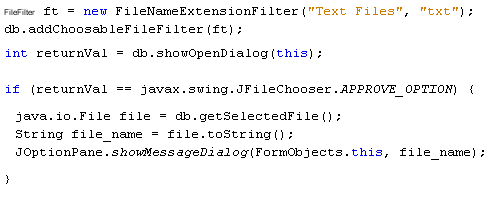
Run your programme again, and have a look at your dialogue box. Click the arrow on the dropdown list:
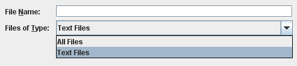
Select the Text Files option. Your dialogue box will then only displays files with the extension .txt.
If you want another line on the list, (to display html files, for example), you can set up another FileFilter object:
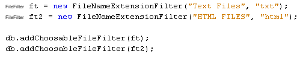
When the programme is run, the Files of Type list would then look like this:
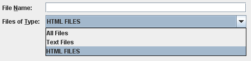
We can now write the code to actually open the file. We'll do that in the next part.